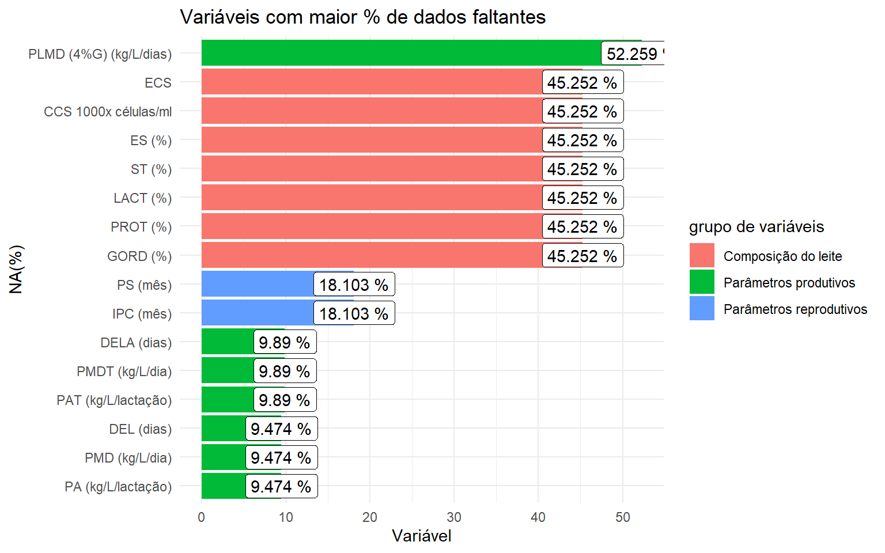

Laboratório de Estatística Aplicada
Introdução
A fim de fixar os conhecimentos passados em sala de aula, foi passado um banco de dados com informações referentes ao nascimento de bovinos.
Variáveis
O banco de dados fornecido contém ncol(data) variáveis e nrow(data) observações, divididas nos seguintes grupos:
- Características parto
- Parâmetros reprodutivos
- Parâmetros produtivos
- Composição do leite
- Parâmetros climáticos
Sendo que a variável de interesse é a variável categória “situação do parto”, dividida em 3 níveis:
- Normal
- Ajudado posicionado
- Ajudado difícil
Objetivos
Com base nisso, esse trabalho possui os seguintes objetivos:
- Avaliar a correlação entre as variáveis com a situação do parto a fim de verificar quais fatores mais influenciam no parto
- Buscar meios de realizar agrupamentos entre os partos de acordo com suas características
- Criar um modelo preditivo capaz de prever o tipo de parto com base nas condições
Análise descritiva
Valores faltantes
